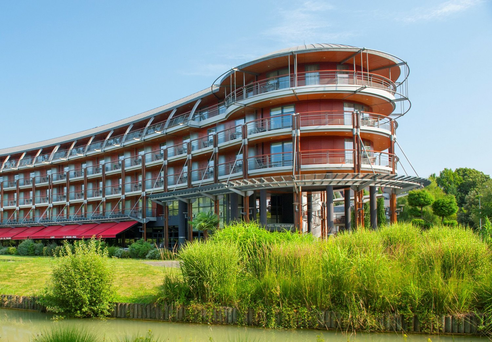
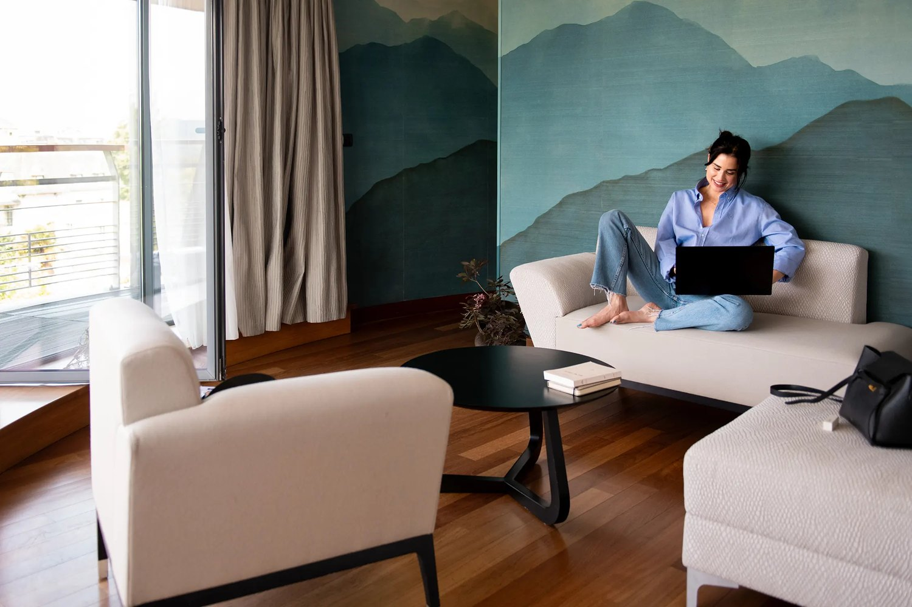
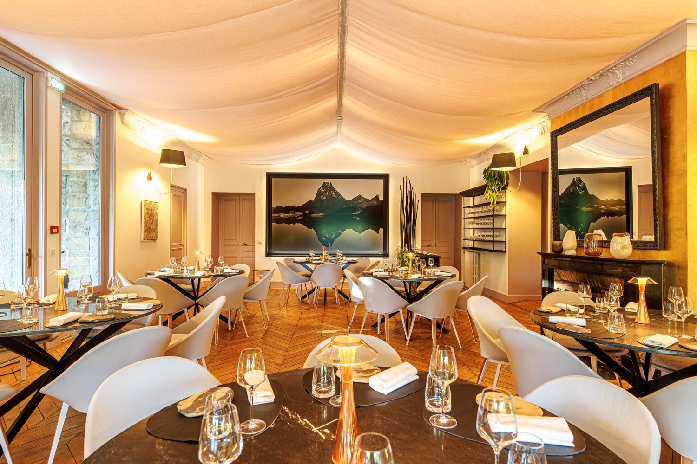
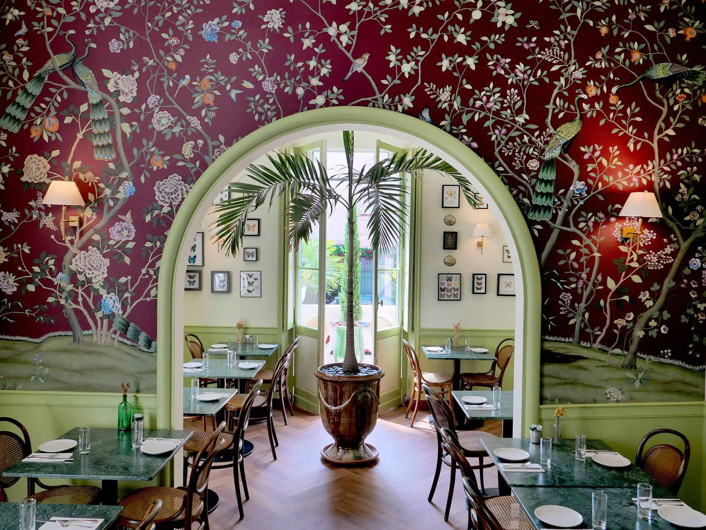

Meilleurs hôtels à Pau : 8 adresses classées en 2026
Deux 5 étoiles pour soixante-dix-sept mille habitants, une villa de 1865 dans deux hectares
de parc, et la chaîne des Pyrénées depuis la salle de sport.
Par Lucas Lecoq, rédacteur en chef✺Publié le 3 septembre 2026✺14 min de lecture

La façade courbe du Parc Beaumont, en bordure du parc éponyme. Photo : site
officiel de l'établissement.
L'essentielTrois adresses, trois logiques de séjour
Parc Beaumont Hôtel & Spa, 9,1/10 : 5 étoiles MGallery en bordure
du parc, 75 chambres et suites, spa avec piscine intérieure
chauffée de quinze mètres, et la chaîne des Pyrénées depuis les chambres comme
depuis la salle de sport.
Villa Navarre, 8,7/10 : le second 5 étoiles de la ville, une villa de
1865 dans deux hectares de parc, 30 clés, et la table
Maison Ruffet, référencée au Guide MICHELIN.
Hôtel Bristol, 8,4/10 : 3 étoiles en centre historique, rue Gambetta,
21 chambres toutes différentes. Le meilleur rapport caractère-prix du
classement.
On croit souvent que Pau n'a qu'un seul établissement au sommet. La ville en compte
deux classés 5 étoiles, ce qui est considérable pour soixante-dix-sept mille
habitants, et ils ne se ressemblent en rien : l'un est un hôtel contemporain de soixante-quinze
clés en bordure de parc, l'autre une villa du XIXe siècle posée dans deux hectares de
verdure. Nous classons huit adresses par le Score LMHS sur 10 et par
l'Indice Pyrénéen sur 5, notre indice thématique pour cette page.
Notre sélection : les 8 meilleurs hôtels de Pau
01

Parc Beaumont Hôtel & Spa, le 5 étoiles du parc 9,1/10
La maison compte 75 chambres et suites, dont des chambres communicantes
pour les familles, et sa façade courbe en bois la rend reconnaissable entre toutes. Ce
qu'elle vend vraiment, c'est un point de vue : les chambres annoncent des
vues sur le parc et sur les Pyrénées, et la salle de fitness a droit à la
même chose, ce qui est rare. Le spa réunit une piscine intérieure chauffée de
quinze mètres, des bains bouillonnants, un sauna et un hammam, avec des soins
Maison Sothys. La table s'appelle Le Jeu de Paume, le bar
Le Grand Prix, en clin d'œil au circuit automobile de la ville. Le bémol :
contrairement à ce qu'on lit parfois, il n'y a pas de bassin extérieur, la
maison n'en annonce aucun. Et l'Indice Pyrénéen reste en deçà de la Villa Navarre, parce que
le bâtiment, lui, est contemporain et ne doit rien au bâti béarnais.
75 chambres et suites · Piscine intérieure chauffée de 15 m · Soins Maison Sothys · Vue Pyrénées depuis les chambres et le fitness ·
Site officiel →
02

Villa Navarre, une villa de 1865 dans deux hectares 8,7/10
Voilà le second 5 étoiles de Pau, et celui que les classements oublient le plus souvent.
La villa a été bâtie en 1865 et fait partie du patrimoine de la ville. Elle
est posée dans un parc de deux hectares, avec vue sur les Pyrénées, à
quelques minutes du centre. Les 30 chambres et suites se répartissent entre
douze dans la villa et dix-huit dans le pavillon attenant,
ce qui est la première question à poser en réservant. La maison exploite deux tables, le
Bistrot Ruffet au déjeuner et la Maison Ruffet au dîner,
du mardi au samedi ; cette dernière est référencée au Guide MICHELIN, avec un menu unique et
une salle de six tables seulement. Côté bien-être : espace aquatique, spa, hammam et
sauna, avec piscine intérieure chauffée et jacuzzi. C'est le meilleur Indice
Pyrénéen du classement. Le bémol : les tables ferment dimanche et lundi.
30 chambres, 12 dans la villa et 18 au pavillon · Villa de 1865, parc de 2 hectares · Maison Ruffet, référencée au Guide MICHELIN · Piscine intérieure et spa ·
Site officiel →
03

Hôtel Bristol, vingt et une chambres toutes différentes 8,4/10
C'est la maison de caractère du classement, et elle le revendique : une belle demeure
historique en plein centre historique, avec 21 chambres à la
décoration singulière, toutes différentes. Le point de bascule, quand on compare
avec les enseignes, tient là : on ne réserve pas une catégorie, on réserve une chambre. La
maison exploite un salon et un jardin d'hiver dont le décor, papiers
peints et arche végétale, est le plus photographié de la ville. Elle tient aussi une
rubrique de dédicaces et de rencontres, ce qui en dit long sur son ancrage local. Le bémol :
vingt et une clés, cela se remplit vite, et à ce niveau de gamme il ne faut pas attendre
d'équipement bien-être.
21 chambres toutes différentes · Demeure historique, centre historique · Salon et jardin d'hiver · Vie littéraire et dédicaces ·
Site officiel →
04
Hôtel de Gramont, quatre étoiles depuis 2020 7,8/10
Attention à une donnée périmée qui circule beaucoup : la maison
n'est plus un 3 étoiles. Elle a obtenu sa quatrième étoile après
d'importants travaux de rénovation en 2020, et compte 36 chambres
climatisées. La position, place Gramont, la place à quelques centaines de mètres du
château de Pau, dans le tissu ancien de la ville, ce qui explique son bon
Indice Pyrénéen : ici l'ancrage n'est pas décoratif, il est géographique. Le bémol : la
maison ne propose ni spa ni restaurant, et sa rénovation l'a rendue confortable plus que
pittoresque. Pour qui veut le centre ancien et un confort récent.
36 chambres climatisées · 4 étoiles depuis la rénovation de 2020 · Place Gramont, près du château · Sans spa ni restaurant
05
Quality Hotel Pau Centre Bosquet, soixante-dix clés au centre 7,5/10
Deuxième donnée à corriger : c'est un 4 étoiles, et non le 3 étoiles
qu'on lui attribue souvent. La maison compte 70 chambres insonorisées,
avec literie haut de gamme, salles de bain spacieuses, climatisation et connexion rapide.
L'insonorisation n'est pas un détail sur un établissement de cette taille en plein centre.
Le bémol : le registre est celui d'une enseigne internationale, et l'Indice Pyrénéen le
traduit, l'établissement privilégiant la fonctionnalité à l'ancrage. Pour les séjours
d'affaires courts et les familles de passage.
Kyriad Prestige Pau Zénith, l'adresse des soirs de concert 7,3/10
Près du Zénith, Pau · 4 étoiles · Indice Pyrénéen 2,8/5
La géographie fait tout ici : la maison est à 500 mètres du Zénith, du Palais
des Sports et de l'hippodrome, et à cinq kilomètres du centre-ville.
C'est un choix, pas un défaut : qui vient pour un concert ou un salon dort à pied de la
salle, et repart sans traverser Pau. Les 57 chambres sont climatisées,
spacieuses, avec douche à l'italienne, literie haut de gamme et coffre. Le bémol tient à ce
même choix : sans voiture, l'adresse perd tout intérêt pour un séjour touristique, et
l'ancrage béarnais s'y limite à l'enseigne.
57 chambres climatisées · À 500 m du Zénith et du Palais des Sports · À 5 km du centre-ville · Orienté événements et affaires
07
Mercure Pau Palais des Sports, six salles et un parking 7,0/10
Troisième classement à rectifier : c'est un 4 étoiles. La maison joue
franchement la carte du séminaire, avec six salles de réunion, une terrasse
et un parking privé, ce qui, additionné à la proximité du Palais des
Sports, en fait une adresse de congrès plus que de séjour. Les chambres tiennent le standard
de l'enseigne, confort récent et décor sobre. Le bémol : rien ici ne raconte le Béarn, et
l'Indice Pyrénéen le dit sans détour. C'est un hôtel utile, pas un hôtel mémorable.
106 avenue de l'Europe · 6 salles de réunion avec terrasse · Parking privé · Orienté séminaires et congrès ·
Site officiel →
08
Atlantic Hôtel, vingt-quatre clés et le parking offert 6,8/10
C'est le seul 2 étoiles du classement, et il y figure pour une raison précise : sur
24 chambres et une capacité de quarante-huit personnes, la maison offre le
stationnement sécurisé gratuit et un petit-déjeuner buffet, à deux
kilomètres du centre. Pour une famille qui traverse le Béarn en voiture, cette combinaison
vaut mieux qu'un hôtel de centre-ville où le parking se facture chaque nuit. Le bémol est
celui de la catégorie : équipement simple, aucun ancrage local revendiqué, et une adresse
qui se juge à ce qu'elle coûte plutôt qu'à ce qu'elle raconte.
24 chambres, 48 personnes · Parking sécurisé gratuit · À 2 km du centre · Petit-déjeuner buffet
Tableau comparatif : hôtels de Pau 2026
Hôtel
Étoiles
Score LMHS
Indice Pyrénéen
Chambres
Spa
Piscine
Secteur
Pour qui
Parc Beaumont Hôtel & Spa
5
9,1/10
4,2/5
75
Oui, Sothys
Intérieure, 15 m
Parc Beaumont
Bien-être, vue
Villa Navarre
5
8,7/10
4,5/5
30
Oui
Intérieure
Avenue Trespoey
Patrimoine, table
Hôtel Bristol
3
8,4/10
3,8/5
21
Non
Non
Centre historique
Caractère, budget
Hôtel de Gramont
4
7,8/10
4,0/5
36
Non
Non
Place Gramont
Centre ancien
Quality Hotel Centre Bosquet
4
7,5/10
3,1/5
70
Non
Non
Bosquet
Affaires, familles
Kyriad Prestige Pau Zénith
4
7,3/10
2,8/5
57
Non
Non
Zénith
Concerts, salons
Mercure Palais des Sports
4
7,0/10
2,5/5
n. c.
Non
Non
Avenue de l'Europe
Séminaires
Atlantic Hôtel
2
6,8/10
2,2/5
24
Non
Non
Jean Mermoz
Budget, voiture
Classement par Score LMHS. Score moyen des huit adresses : 7,8/10. Indice
Pyrénéen moyen : 3,4/5. Informations relevées le 3 septembre 2026 sur les sites officiels des
établissements, auprès des offices de tourisme de Pau et des Pyrénées-Atlantiques et du Guide
MICHELIN. La mention « n. c. » signale une donnée que l'établissement ne publie pas.
Protocole LMHS : comment nous avons classé ces hôtels
L'Indice Pyrénéen, noté sur 5, est un indice thématique propre à cette page.
Il mesure l'enracinement béarnais et rien d'autre : ancrage dans le bâti local,
rapport à la montagne et aux vues, table et produits régionaux,
indépendance de la maison et échelle. C'est ce qui explique
qu'un 3 étoiles indépendant du centre ancien devance sur ce seul critère des 4 étoiles
d'enseigne. Le Score LMHS sur 10 évalue la globalité, réserves comprises, et
relève de la grille LMHS Destination.
Ce palmarès est documentaire. Nous n'avons pas effectué de séjour de
contrôle. Catégories, capacités, équipements et distinctions ont été relevés le 3 septembre 2026
sur les sites officiels et auprès des offices de tourisme. Aucun partenariat commercial, aucune
affiliation. Aucun tarif n'est publié : les montants dont nous disposions ne
figuraient sur aucun site officiel au moment du relevé, et un prix d'appel se périme en une
saison.
Pau : ce qu'il faut savoir avant de réserver
Deux 5 étoiles, et non un seul. C'est le point que la plupart des
classements manquent. Le Parc Beaumont et la Villa Navarre
sont tous deux classés cinq étoiles, et ils s'adressent à des voyageurs différents : l'un est un
hôtel contemporain de soixante-quinze clés avec spa complet, l'autre une villa de 1865 de trente
clés dans deux hectares de parc. Choisir entre les deux, c'est choisir entre l'équipement et le
lieu.
La table est à la Villa Navarre. La Maison Ruffet,
référencée au Guide MICHELIN, y sert un menu unique dans une salle de six tables. C'est la seule
adresse de ce classement dont la cuisine constitue à elle seule un motif de séjour. Elle ouvre
du mardi au samedi, avec le Bistrot Ruffet au déjeuner : caler ses dates dessus évite une
déception.
La vue se paie, mais pas toujours. Les Pyrénées se voient depuis les
chambres du Parc Beaumont et depuis le parc de la Villa Navarre, ce qui est attendu à ce niveau
de gamme. Elles se voient aussi, et c'est plus surprenant, depuis le boulevard des Pyrénées, la
promenade qui longe le centre-ville et qui vaut à elle seule le déplacement au coucher du
soleil.
Trois secteurs, trois séjours. Le centre historique, autour
du château de Pau et de la rue Gambetta, pour les visiteurs. Le quartier du
Zénith, à cinq kilomètres, pour les concerts et les salons. Et l'axe de l'avenue
de l'Europe, côté Palais des Sports, pour les congrès. Ces trois-là ne se remplacent
pas : réserver au Zénith pour visiter le château est une erreur classique.
Questions fréquentes sur les hôtels de Pau
Quel est le meilleur hôtel de Pau ?
Selon nos relevés 2026, le Parc Beaumont Hôtel & Spa obtient la
meilleure note, 9,1/10 : un 5 étoiles MGallery de 75 chambres et
suites en bordure du parc Beaumont, avec spa, piscine intérieure chauffée de quinze
mètres et vue sur les Pyrénées. Pour un séjour patrimonial ou gastronomique, la
Villa Navarre, second 5 étoiles de la ville, lui est préférable.
Combien d'hôtels 5 étoiles à Pau ?
Deux, contrairement à ce qu'on lit souvent. Le Parc
Beaumont, 1 avenue Édouard VII, et la Villa Navarre, 59 avenue
Trespoey. La ville compte par ailleurs quatre établissements 4 étoiles dans ce classement.
Quel hôtel de Pau a le meilleur spa ?
Le Parc Beaumont, dont le spa réunit une piscine intérieure
chauffée de quinze mètres, des bains bouillonnants, un sauna et un hammam, avec des
soins Maison Sothys. La Villa Navarre propose également un
espace aquatique avec piscine intérieure, jacuzzi, hammam et sauna. Ce sont les deux seules
adresses du classement à disposer d'un équipement bien-être.
Quel hôtel de Pau a une table gastronomique ?
La Villa Navarre, avec la Maison Ruffet, référencée au
Guide MICHELIN : un menu unique servi dans une salle de six tables, du mardi au samedi, dans
une villa de 1865 entourée de deux hectares de parc. Le Bistrot Ruffet
assure le service du déjeuner. Le Parc Beaumont propose de son côté le restaurant
Le Jeu de Paume.
Dans quel quartier dormir à Pau ?
Dans le centre historique si vous venez visiter : le château de Pau, la
rue Gambetta et le boulevard des Pyrénées s'y font à pied, et l'Hôtel Bristol comme l'Hôtel
de Gramont y sont installés. Près du Zénith, à cinq kilomètres, si vous
venez pour un concert ou un salon. Sur l'avenue de l'Europe si vous venez
pour un congrès au Palais des Sports.
Quel hôtel choisir à Pau avec une voiture ?
L'Atlantic Hôtel, 222 avenue Jean Mermoz, offre un
stationnement sécurisé gratuit à deux kilomètres du centre, ce qui en fait
l'option la plus rationnelle pour une famille en itinérance. Le Mercure Palais des
Sports dispose également d'un parking privé, et le Kyriad Prestige
se trouve à cinq kilomètres du centre, sur un secteur où stationner ne pose pas de
problème.
Le mot de LucasLa ville qu'on sous-estime toujours
Pau souffre d'une réputation de ville-étape, et ce classement dit exactement le contraire. Soixante-dix-sept mille habitants, deux hôtels cinq étoiles, une table référencée au Guide MICHELIN dans une villa de 1865, et une chaîne de montagnes qu'on regarde depuis la salle de sport : très peu de villes françaises de cette taille peuvent en dire autant. Ce qui me frappe surtout, c'est l'écart entre les deux maisons du sommet. L'une a construit un bâtiment courbe en bois avec un spa de quinze mètres, l'autre a hérité d'une villa et de deux hectares et n'a eu qu'à ne rien abîmer. Les deux fonctionnent. C'est le signe d'une ville qui a plus d'une manière de bien recevoir.
Lucas Lecoq, rédacteur en chef
Méthode et sources
8 hôtels de Pau classés par le Score LMHS sur 10, issu de la grille LMHS
Destination, et par l'Indice Pyrénéen sur 5, indice thématique propre à cette
page : ancrage dans le bâti local, rapport à la montagne et aux vues, table et produits
régionaux, indépendance et échelle de la maison. Score moyen des huit adresses : 7,8/10.
Indice Pyrénéen moyen : 3,4/5. Aucun séjour de contrôle n'a été effectué.
Catégories, capacités, équipements et distinctions relevés le 3 septembre 2026 sur les sites
officiels des établissements, auprès des offices de tourisme de Pau et des
Pyrénées-Atlantiques et du Guide MICHELIN. Aucun tarif n'est publié, faute
d'en avoir relevé à la source. Aucun partenariat commercial, aucune affiliation.
Photographies : Parc Beaumont Hôtel & Spa, Villa Navarre et Hôtel Bristol, sites
officiels.
8 adressesIndice Pyrénéen /5Sans séjour de contrôle0 partenariat